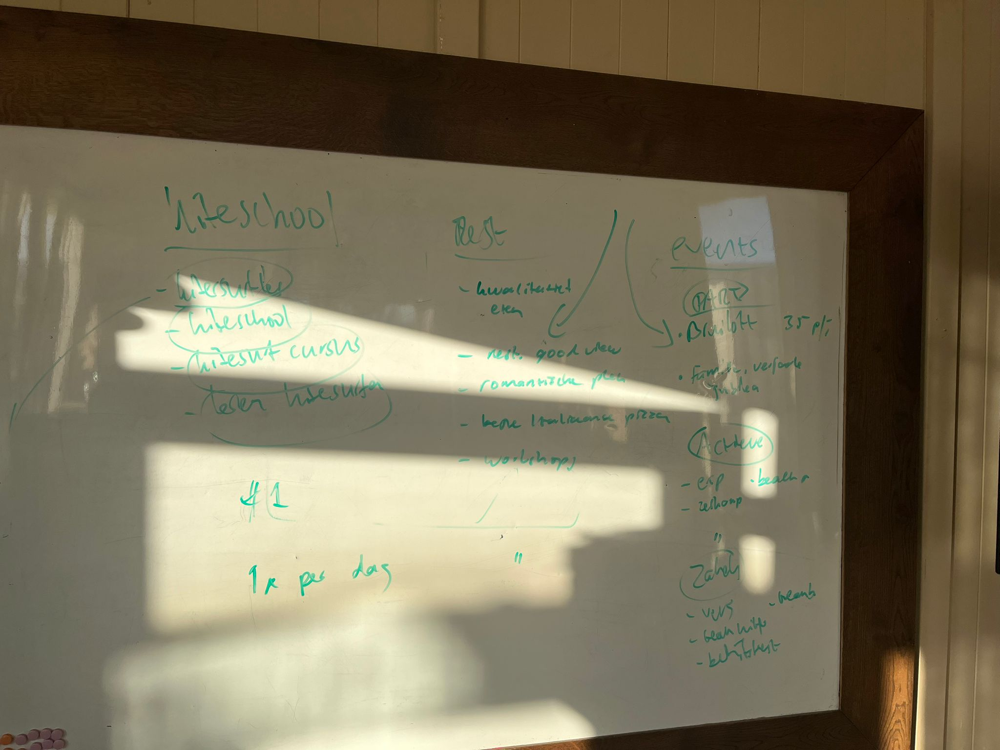

Whiteboard, audio-transcript, geëxtraheerde inzichten
01Whiteboard-foto
Tijdens het gesprek geschetste content-clusters per departement. Klik om te vergroten.

02Whiteboard — gestructureerd
Foto omgezet naar leesbare tekst. Onzekere stukken (door glare op middenstuk) zijn gemarkeerd.
Kiteschool
- kitesurfles
- kiteschool
- kitesurf cursus
- testen kitesurfen (proefles)
Vier zoektermen ingecirkeld als één cluster. Ambitie: top-1 + 1 lead/dag.
Rest (Restaurant)
- kwaliteit eten
- restaurant good view
- romantische plek
- beste Italiaanse pizza
- workshops
Pijl verbindt items als funnel-route. "Beste Italiaanse pizza" = onontgonnen keyword-kans.
Events
- Bruiloft (35 p/p)
- Familie · verjaardag · jubilea
- csp · beach r (onzeker)
- workshop
- VEIS · beants (onzeker)
- beach lunch
- bedrijfsfeest
03Audio-transcript
Volledige opname (≈98 min) lokaal getranscribeerd via faster-whisper (small int8). Privacy: audio verlaat niet je computer.
Volledig transcript geladen vanuit bronmateriaal/audio-transcript-2026-04-29.txt.
Audio is lokaal verwerkt — geen cloud-upload. Onderstaande tekst is ruwe Whisper-output (niet geredigeerd):
⚠️ Whisper-output bevat herkenningsfouten (eigennamen, vakjargon). Voor notulen-extractie gebruiken we deze tekst als bron, niet als eindversie.
04Geëxtraheerde inzichten
Wat het bronmateriaal toevoegt aan de pilot — direct verwerkt in audit, content-queue en actielijst.
"Beste Italiaanse pizza Kijkduin"
Whiteboard-cluster Rest noemde dit expliciet. SERP-snapshot toonde geen sterke concurrent op deze long-tail. Direct kandidaat voor eerste restaurant-blogpost.
"#1 + 1× per dag"
Whiteboard-shorthand voor Kiteschool: top-1 op kernkeyword kitesurfles kijkduin + 1 lead per dag. Concrete KPI uit de drie BLOW-mensen zelf.
Particulier / Actief / Zakelijk
Bestaande content-queue had events als één bucket. Whiteboard splitst het in drie sub-clusters. Content-queue herstructureren met deze taxonomie.
Restaurant + Events 0 content
Audit-bevinding (14/15 posts kitesurf) wordt op whiteboard zelf bevestigd: "Rest" en "Events" hebben elk 5+ keyword-ideeën die nog géén content hebben. Direct werkpakket voor stap 1.
05Hoe deze bron doorwerkt
Wie wil weten waar een actie of beslissing vandaan komt, kan via deze pagina terug naar de bron.
Whiteboard-discussie verwerkt
Sectie "Wat er besproken is" in notulen verwijst terug naar deze foto + tekst.
Whiteboard digitaliseren
Item T-5 in actielijst: ContentQueue uitbreiden met whiteboard-driedeling.
Restaurant-cluster kans
Audit wordt aangevuld met "beste Italiaanse pizza Kijkduin" als top-target.
Seed CSV uitbreiden
30-keyword-seed wordt herstructureerd met whiteboard-clusters en sub-clusters.